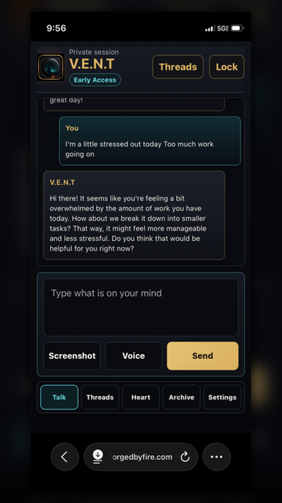
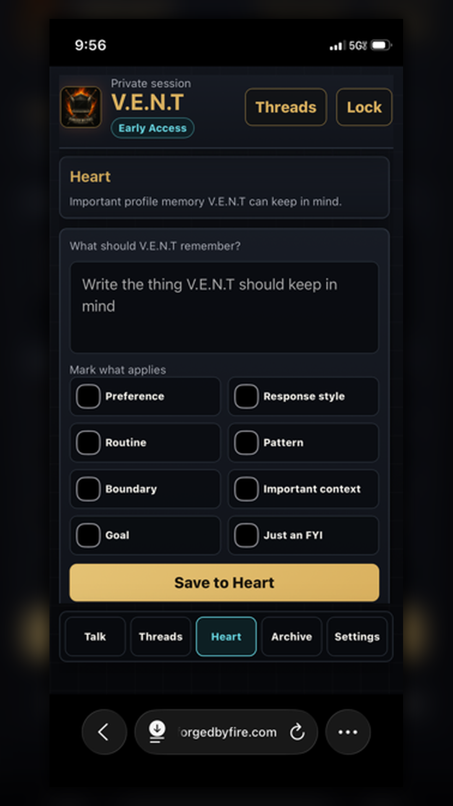

Talk Threads
Keep conversations organized as private threads so you can return to what you were processing.

Private venting and reflection companion
V.E.N.T is an Android testing app for private reflection, journaling, grounding, thread archives, and pattern finding. It is not a licensed therapist, emergency service, or replacement for real-world help.
Keep conversations organized as private threads so you can return to what you were processing.
Save important moments, review past entries, and find useful patterns later.
Capture low-risk preferences, grounding tools, values, boundaries, and lessons that help future reflection.
Use the app to slow down, name what is happening, and choose one small next step.


V.E.N.T is currently available through Google Play testing. Feedback is especially useful for phone layout, voice input, thread flow, archive flow, and clarity around privacy boundaries.
V.E.N.T is a reflection and journaling companion. It is not a licensed therapist, crisis line, emergency service, or substitute for clergy, family, medical care, mental health care, or trusted real-world support.